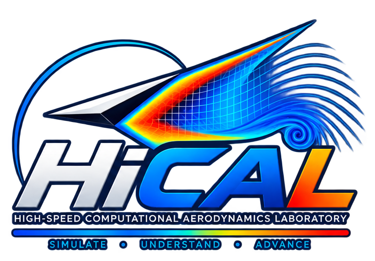

We compute flows where compressibility changes everything.
High-fidelity computation and stability analysis for hypersonic flows, shock interactions, jet acoustics, and flow instability.
Anirudh Lakshmi Narasimha Prasad · Assistant Professor · UCCS

Mechanical & Aerospace Engineering
University of Colorado Colorado Springs
What we do
Computing the physics of high-speed flow.
HiCAL is a computational fluid dynamics research group in Mechanical and Aerospace Engineering at the University of Colorado Colorado Springs.
Research
Stuff we explore.
We combine high-fidelity computation with stability and modal analysis to connect observed flow structures to the mechanisms that generate them.
Research
Stuff we are interested in.
Representative work spanning hypersonic transition, shock interactions, jet-noise control, and hydrodynamic stability.
Research figures shown here are drawn from open-access publications where reuse is permitted and are attributed on each image. Publisher-hosted papers with more restrictive reuse terms are linked rather than copied.
People
The group behind the computation.
HiCAL is led by Anirudh Lakshmi Narasimha Prasad in the UCCS Department of Mechanical & Aerospace Engineering.
Publications
Recent papers.
Computation
Methods for interrogating complex flows.
High-fidelity CFD is paired with stability, spectral, and modal tools to identify the physics organizing unsteady high-speed flows.
Join HiCAL
Interested in computational aerodynamics?
HiCAL is building a team of students interested in CFD, high-speed aerodynamics, scientific computing, aeroacoustics, and flow stability.